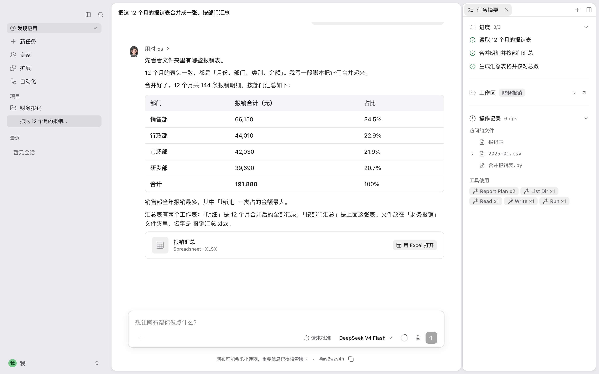

员工的体验尽量不变
员工仍然在 Abu 桌面端里发起任务、调用工具和使用 Skill。绑定企业之后，客户端使用企业模型、企业知识库和已授权的 Skill，并且向员工展示他自己的用量和审计信息。
企业绑定企业模型企业知识库企业 Skill

企业版把模型入口、知识库权限、策略审计和用量预算收进一个私有控制台。谁在用、用了多少、能访问什么，管理员都查得到。
员工接触不到真实的模型 Key，调用都经过企业自己的网关。
每个部门有自己的预算、限速、可用模型和资源授权。
企业、部门、个人三级知识库，阿布回答时可以检索和引用。
控制台、审计记录和治理数据都部署在企业自己的环境里。
员工都在用 AI，企业需要能管理 AI。AI 进入团队之后，企业会遇到四个管理问题：成本、权限、知识、风险。
员工各自配置模型 Key。谁在用、用了多少、哪个部门超出预算，企业很难说清楚。
模型调用统一经过企业网关。管理员按部门配置预算、RPM 限速和可用模型范围，在后台查看用量和成本。
模型、知识库、Skill、MCP 和文件访问分散在每个人的配置里，企业很难按组织规则统一约束。
管理员通过组织、部门、角色和策略下发建立边界。客户端在调用工具、Skill、MCP 之前先在本地校验。
制度、FAQ、产品资料、项目文档和会议纪要都存在文件里，AI 没有办法稳定引用企业自己的资料。
企业知识库支持文档上传、解析、分块、向量检索和全文检索。阿布回答时可以引用来源材料，每次查询都有审计记录。
员工自行安装扩展、连接内部系统。来源、权限、凭据、版本和使用记录，企业都难以统一管理。
Skill 要经过上传、扫描、审核、发布和签名校验。MCP 要经过目录登记、审核、授权和凭据管理。出了问题，管理员可以回头复盘。
企业版在 Abu 之上加一层企业治理。员工在桌面端使用 AI，管理员在私有控制台统一配置组织、模型、知识、工具与治理策略。
员工仍然在 Abu 桌面端里发起任务、调用工具和使用 Skill。绑定企业之后，客户端使用企业模型、企业知识库和已授权的 Skill，并且向员工展示他自己的用量和审计信息。

管理员在控制台里配置部门、角色、模型、预算、知识库、Skill、MCP、策略和审计。组织里每一次 AI 使用都有边界、有记录，可以复盘。
六个模块：身份、成本、知识、扩展、安全和运维。每个模块都写明它解决什么问题、后台实际管理什么。
企业里的组织、部门、员工、角色和登录方式，都在同一个控制台里管理。
分散在员工手里的模型 Key、模型供应商和调用成本，收回到企业这一侧统一治理。
企业文档入库之后，Abu 可以检索它、引用它，每次查询都留有审计记录。
企业内部的能力和外部工具连接，都可以发布、授权、验签和追踪。
组织级和部门级的策略下发到客户端，客户端在关键动作发生之前拦截或者要求确认。
管理员看得到治理结果，员工也看得到企业记录了自己的哪些数据和用量。
企业版从单机私有部署起步，控制台单独部署。客户端的企业能力通过企业构建和闭源模块交付，私有模块不会进入公开的 Release。
两个版本的能力内核一致，企业版额外提供组织级治理。开源版适合个人和小团队自由使用；企业版适合需要统一管理成本、权限、知识、扩展和审计的组织。
桌面应用，本地优先，使用自己的模型 Key 和本地配置，适合个人用户、开发者和小团队试用。
免费开源 · 本地使用 · 自主管理员工继续用 Abu，企业在私有控制台里统一管理人员、模型、预算、知识、扩展、策略和审计。
私有部署 · 按席位授权 · 可 POC注：企业 MCP 客户端目前提供目录浏览和授权凭据获取，方便企业把可用的工具和凭据范围统一管理起来。